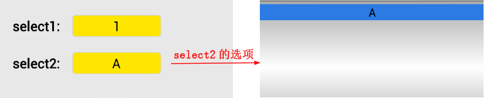
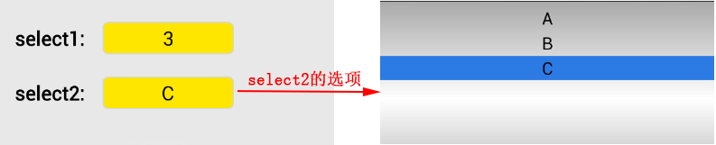

脚本动态设置select控件选中项及改变可选项
1 效果图
select1选择"1"选项：

select1选择"2"选项：
select3选择"3"选项：

如图所示为两个select控件，select1中有"1"、"2"、"3"三个选项，select2中的选项会随select1中选中项的变化而变化：
- 当select1选择"1"选项时，select2中的选项只有"A"一项；
- 当select1选择"2"选项时，select2中的选项有"A"和"B"两项，且默认选中"B"；
- 当select1选择"3"选项时，select2中的选项有"A"、"B"、"C"三项，且默认选中"C"。
本节将通过该实例介绍如何使用脚本动态设置select控件的选项。
2 实现方法
示例的完整代码链接为：script_change_select.xml
目前客户端还未支持通过setProperty方法改变select控件选中项的功能，要改变select控件的选项只能通过改变其报文内容来实现。客户端支持使用setInnerHTML接口更新控件报文内容刷新界面，但该接口只能应用于容器控件，故我们需要在select控件外嵌一个div，再设置div的HTML以达到更新select控件的报文。
示例的界面主要包括两个select，第二个select要随第一个select的变化而变化，故我们给select1的每个选项都设置了onclick属性，当点击选项时会触发函数，在该函数中实现动态设置select2报文使其选项变化的功能。如前面所述，setInnerHTML不能直接应用于select控件，故select2外面嵌了一个div。
界面的报文代码片段如下：
<?xml version="1.0" encoding="UTF-8"?>
<content>
<head>
<style>
.label1{left:20px;top:30px;width:80px;height:30px;font-size:18px;font-weight:bold;}
.label2{left:20px;top:80px;width:80px;height:30px;font-size:18px;font-weight:bold;}
.selectOne {top:30px;left:100px;height:30px;width:120px;font-size:18px;background-color:#FFE600;text-align:center;}
.selectTwo {top:10px;left:0px;height:30px;width:120px;font-size:18px;background-color:#FFE600;text-align:center;}
.div1 {left:100px;top:70px;height:60px;width:300px;}
</style>
<script type="text/x-lua" >
...
</script>
</head>
<body>
<!--select1-->
<label class="label1">select1:</label>
<select name="selOne" class="selectOne">
<option value="1" selected="selected" onclick="changeSelTwo()">1</option>
<option value="2" onclick="changeSelTwo()">2</option>
<option value="3" onclick="changeSelTwo()">3</option>
</select>
<!--select2-->
<label class="label2">select2:</label>
<div class="div1" name="div_sel" border="0">
<select class="selectTwo">
<option>A</option>
</select>
</div>
</body>
</content>
changeSelTwo()函数实现了根据select1选中项不同动态设置select2选项的功能。该函数的逻辑如下：
- 判定当前select1选中的是哪个选项。注：客户端目前只支持select控件通过获取其value属性值判定是哪个选项，不支持获取"text"属性值。select的报文中要写明value属性以标识选项。
- 根据选中项的不同拼接select2的报文，实际是select2外嵌div的报文。
- 获取div，使用setInnerHTML接口更新其报文使select2选项改变。
changeSelTwo()函数的实现代码如下:
<script type="text/x-lua" >
<![CDATA[
--根据select1选中项的value值动态设置select2的选项
function changeSelTwo()
--获取select1选中项的value值
local selOneValue;
local selOne = document:getElementsByName("selOne");
if selOne and #selOne > 0 then
selOneValue = selOne[1]:getPropertyByName("value");
end;
--根据value值拼接select2报文
local content;
if selOneValue == "1" then
content = [[<div class="div1" name="div_sel" border="0">
<select class="selectTwo">
<option>A</option>
</select>
</div>]];
elseif selOneValue == "2" then
content = [[<div class="div1" name="div_sel" border="0">
<select class="selectTwo">
<option>A</option>
<option selected="selected">B</option>
</select>
</div>]];
else
content = [[<div class="div1" name="div_sel" border="0">
<select class="selectTwo">
<option>A</option>
<option>B</option>
<option selected="selected">C</option>
</select>
</div>]];
end
--设置select2报文
local div_sel = document:getElementsByName("div_sel");
if div_sel and #div_sel > 0 then
div_sel[1]:setInnerHTML(content);
end;
end
]]>
</script>
3 注意事项
- 要判断select选中项只能通过获得value属性值，客户端目前不支持获取select的"text"属性值。
- 目前客户端不支持通过setProperty方法设置select控件的选中项，故所有select控件选项的变化都必须通过setInnerHTML方法来实现。
- setInnerHTML只对容器控件有效，要改变select报文必须在select外嵌一个div，通过改变div报文间接改变select报文。